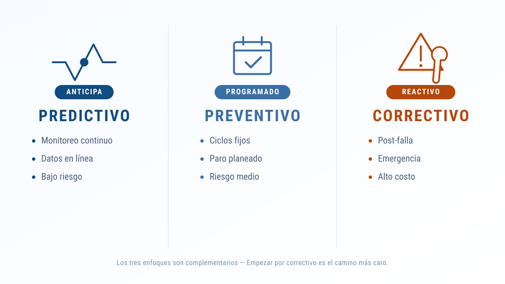
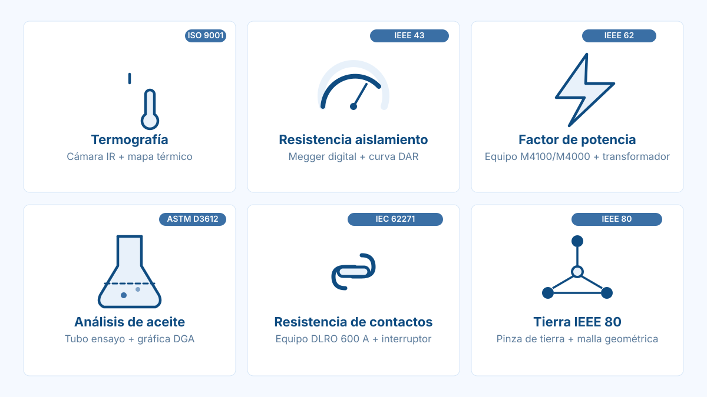
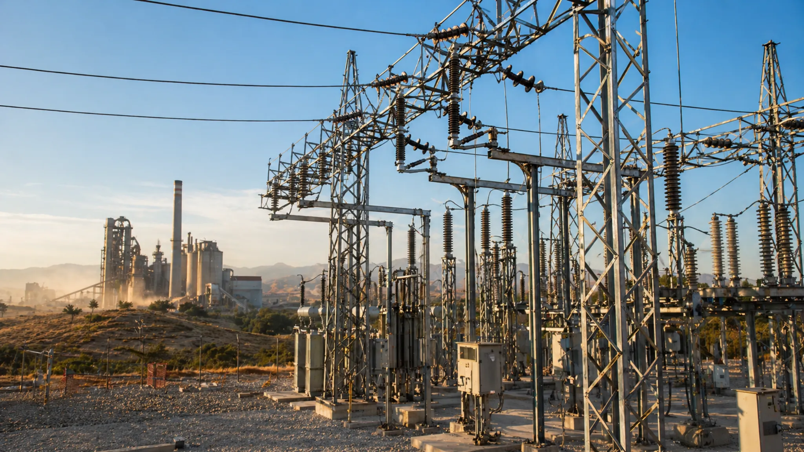

Por qué el mantenimiento de subestaciones es el activo más rentable de tu planta
En la operación industrial mexicana — cementeras, mineras, alimentos y bebidas, oil & gas, manufactura pesada — la subestación es el cuello de botella entre la red y todo lo demás. Si falla, no falla un equipo: falla la planta. El mantenimiento bien planeado no es un gasto recurrente, es la forma más barata de comprar continuidad operativa.
Esta guía explica cómo planear, ejecutar y normar el mantenimiento de subestaciones de baja, media y alta tensión en México: tipos de mantenimiento, pruebas eléctricas obligadas, normativa aplicable, frecuencias típicas y un caso real de intervención a 69 kV en planta cementera. Al final encontrarás un checklist anual descargable que puedes usar como base de tu propio plan.
1. Qué incluye el mantenimiento de una subestación AT, MT y BT
En la práctica mexicana se manejan tres niveles de tensión: baja tensión (BT) hasta 1 kV, media tensión (MT) entre 1 y 35 kV (donde caen 13.8 y 23 kV, los más comunes a nivel industrial) y alta tensión (AT) arriba de 35 kV (69, 115 y 138 kV en interconexión con CFE). Cada nivel impone exigencias distintas de aislamiento, distancias, protecciones y procedimientos de seguridad.
El mantenimiento abarca todos los componentes activos y pasivos de la subestación. No es solo "limpiar y reapretar":
- Transformadores de potencia: aceite, devanados, bushings, cambiador de derivaciones, sistemas de enfriamiento.
- Interruptores de potencia: mecanismo de operación, cámaras (SF6, vacío o aceite), contactos principales y de arqueo.
- Seccionadores y cuchillas: contactos, mecanismos, alineación.
- Transformadores de instrumento (TC y TP): aislamiento, relación y polaridad.
- Sistemas de protección y relés: verificación de ajustes, pruebas funcionales primarias y secundarias.
- Sistemas de control y SCADA: integridad de señales, comunicaciones, sincronización de tiempo.
- Servicios auxiliares AC/DC: banco de baterías, cargadores, distribución auxiliar.
- Malla de tierra y apartarrayos: resistividad, continuidad, integridad de conexiones equipotenciales.
- Obra civil y estructuras: soportes, fundaciones, drenajes, control de acceso.
Si quieres ver cómo se diseña una subestación por capas — potencia, protección, control y comunicaciones — antes de planear su mantenimiento, revisa nuestra guía de modernización de subestaciones que entra en detalle al modelo NSIC.
2. Tipos de mantenimiento: predictivo, preventivo y correctivo
Los tres enfoques no son alternativos — son complementarios y deben coexistir en un plan maduro. La diferencia está en cuánto OPEX absorben y cuánto riesgo residual dejan.

| Enfoque | Cuándo aplica | Datos / herramientas | Frecuencia típica | Riesgo residual |
|---|---|---|---|---|
| Predictivo | Operación normal, sin paro. | Termografía, monitoreo en línea, análisis de aceite (DGA), descargas parciales. | Continuo o trimestral. | Bajo — anticipa fallas antes de que escalen. |
| Preventivo | Paro programado planeado. | Pruebas eléctricas, inspección visual, reapriete, lubricación, calibración. | Anual a bianual. | Medio — depende de calidad de la rutina. |
| Correctivo | Tras una falla en operación. | Diagnóstico de causa raíz, refacciones, reparación o reemplazo. | Ad-hoc. | Alto — más caro, más lento, más riesgoso. |
El error típico es ejecutar solo preventivo "porque siempre se ha hecho así" sin instrumentar lo predictivo. Una termografía semestral de USD 2,000 puede detectar un punto caliente que evita un incendio de transformador de USD 800,000 más tres semanas de paro.
3. Pruebas eléctricas clave
Estas son las pruebas que cualquier plan serio de mantenimiento de subestación industrial debe contemplar. Las primeras tres son no invasivas (predictivas); el resto requieren equipo desenergizado.

Termografía infrarroja
Inspección con cámara térmica de barras, conexiones, bushings y mecanismos en operación. Detecta puntos calientes por mal apriete, corrosión o sobrecarga antes de que escalen a falla. Es la prueba con mejor relación costo-beneficio del catálogo.
Resistencia de aislamiento (megger) y absorción dielectrica
Mide la integridad del aislamiento sólido en transformadores, cables y motores aplicando tensión DC. El índice de polarización (PI) y el cociente de absorción dielectrica (DAR) indican humedad o contaminación del aislamiento.
Factor de potencia y tan-delta
En transformadores de potencia, bushings y cables. Detecta envejecimiento del aislamiento por humedad, contaminación o degradación térmica. Tendencia ascendente en mediciones sucesivas es señal temprana de pérdida de vida útil.
Análisis físico-químico y dielectrico del aceite
El aceite del transformador es testigo silencioso de su salud interna. El análisis de gases disueltos (DGA) por cromatografía permite detectar arcos, descargas parciales o sobrecalentamiento de papel y aceite. Las pruebas de rigidez dielectrica (BDV), humedad, acidez y tensión interfacial completan el diagnóstico.
Resistencia de contactos en interruptores (DLRO)
Mide caída de tensión con corriente de prueba alta (100−600 A DC) en contactos principales de interruptores y seccionadores. Una resistencia anormal indica desgaste, oxidación o falta de presión de contacto — precursores de calentamiento y arqueo.
Mediciones de puesta a tierra y continuidad de malla
Verifica la efectividad del sistema de tierras de la subestación. Una malla degradada es un riesgo de seguridad invisible: tensión de paso y de contacto pueden volverse letales sin previo aviso. Se mide resistividad de suelo, resistencia de la malla y continuidad de conexiones equipotenciales.
| Prueba | Qué detecta | Norma de referencia | Frecuencia recomendada |
|---|---|---|---|
| Termografía | Puntos calientes, mal apriete, sobrecarga. | NETA MTS, ASTM E1934 | Semestral |
| Resistencia de aislamiento | Humedad, contaminación, degradación. | IEEE 43, IEC 60270 | Anual |
| Factor de potencia / tan-delta | Envejecimiento del aislamiento. | IEEE C57.152 | Anual a bianual |
| Análisis de aceite (DGA + FQ) | Arcos, descargas, sobrecalentamiento. | NMX-J-169-ANCE, IEEE C57.106, IEC 60422 | Anual (semestral en críticos) |
| Resistencia de contactos (DLRO) | Desgaste, oxidación. | IEC 62271 | Anual a bianual |
| Sistema de tierras | Tensión de paso/contacto, continuidad. | IEEE 80, IEEE 81, NOM-001-SEDE | Bianual |
4. Normativa aplicable en México
El marco normativo para mantenimiento eléctrico industrial en México combina NOM mexicanas obligatorias y estándares internacionales adoptados por la práctica:
- NOM-001-SEDE-2012 — Instalaciones eléctricas de utilización. Marco general obligatorio para toda instalación industrial en México.
- NOM-029-STPS-2011 — Mantenimiento de las instalaciones eléctricas en los centros de trabajo. Obligaciones del patrón para operación y mantenimiento seguro.
- NMX-J-169-ANCE — Métodos de prueba para transformadores de distribución y potencia.
- IEEE 62 / IEEE C57.152 — Guías de diagnóstico para transformadores líquido-aislados, ampliamente adoptadas a nivel industrial.
- IEC 60076 — Especificaciones para transformadores de potencia.
- IEC 60270 — Técnicas para medición de descargas parciales en aislamiento.
- CFE-G0000-62 y estándares NRF de PEMEX cuando aplica al cliente.
- NFPA 70E — Seguridad eléctrica en lugares de trabajo, análisis de arc flash y EPP categorías 1-4.
Para el cliente industrial, lo importante no es memorizar la lista — es exigir que el proveedor de mantenimiento entregue evidencia documental de cumplimiento por cada una. Un reporte serio incluye protocolos firmados, certificados de calibración del equipo de prueba y un dictamen técnico contra norma.
5. Frecuencias recomendadas y plan anual
El plan anual debe combinar inspecciones cortas frecuentes con intervenciones grandes espaciadas. Una matriz de referencia para subestaciones industriales 13.8−69 kV en México:
| Equipo | Inspección visual | Pruebas eléctricas | Mantenimiento mayor |
|---|---|---|---|
| Transformador de potencia | Mensual | DGA semestral, dielectricas anuales | Cada 6 años |
| Interruptor de potencia (SF6) | Trimestral | DLRO y tiempo de operación anuales | Cada 5 años o según número de operaciones |
| Seccionadores y cuchillas | Trimestral | DLRO bianual | Cada 6-8 años |
| Relés de protección | N/A | Pruebas funcionales anuales | Recalibración cada 4-5 años |
| Banco de baterías DC | Mensual | Conductancia y descarga anuales | Reemplazo cada 8-12 años |
| Malla de tierra | Anual visual | Resistividad y resistencia bianuales | Refresco cada 10 años |
Los números son referencia industrial típica. La criticidad del proceso, condiciones ambientales (corrosivos, altitud, temperatura) y el historial de la subestación pueden ajustar frecuencias en ambos sentidos.
6. Señales de que tu subestación necesita reparación urgente
Si tu subestación presenta cualquiera de estas señales, no esperes al próximo paro programado:
- Disparos repetidos o intempestivos sin causa identificable.
- Ruidos anómalos en transformador (zumbido más fuerte de lo habitual, golpes metálicos internos).
- Olor a aceite quemado o a aislamiento.
- Fugas visibles de aceite en transformadores, bushings o tanques.
- Lecturas térmicas anómalas en monitoreo en línea o termografía.
- Alarmas de Buchholz, sobre-presión o nivel bajo de aceite activas.
- Calentamiento visible o decoloración en barras y conexiones.
- Dificultad para operar interruptores o seccionadores (pegado, golpeteo, tiempos de operación fuera de spec).
- Presencia de descargas parciales audibles o visibles (efecto corona).
- Variaciones inexplicables en lecturas de tensión, corriente o factor de potencia.
Cualquiera de estas requiere intervención correctiva inmediata con personal calificado, no esperar al próximo cronograma. El costo de actuar tarde escala exponencialmente.
7. Caso real — mantenimiento mayor 69 kV cementera Jalisco (2025)
Mantenimiento mayor a subestación 69 kV — planta cementera, Jalisco
Contexto: planta cementera en Jalisco con subestación de 69/13.8 kV alimentando hornos rotativos, molinos y servicios auxiliares. La criticidad operativa exige que cualquier intervención se ejecute dentro de una ventana de paro programado pactada con producción con meses de anticipación.
Alcance ejecutado por VMS Energy:
- Pruebas dielectricas integrales al transformador de potencia 69/13.8 kV: factor de potencia, resistencia de aislamiento, análisis físico-químico y DGA del aceite.
- Mantenimiento mayor a interruptores de potencia: revisión de mecanismos, contactos, prueba de tiempos y resistencia DLRO.
- Reapriete certificado de conexiones de potencia con torque calibrado y registro fotográfico.
- Termografía previa y posterior a la intervención para validar resultado.
- Verificación y refresco de protecciones, incluyendo pruebas funcionales de relés y comprobación de coordinación.
- Inspección y mediciones a la malla de tierra, con dictamen contra IEEE 80.
- Documentación completa: protocolos firmados, dictámenes técnicos y entrega de bitácora.
Resultado: subestación devuelta a operación dentro de la ventana planificada, con pruebas de aceptación favorables y un plan de seguimiento predictivo a 12 meses. El cliente conservó la continuidad de la línea de producción y obtuvo un dosier técnico utilizable para auditorías ISO y reporting corporativo.

¿Tu subestación necesita un diagnóstico independiente?
Hacemos visita técnica con termografía y revisión preliminar para determinar el alcance real de mantenimiento que tu instalación requiere. Sin compromiso de contratación.
8. ¿Mantenimiento o modernización? Cómo decidir
Llega un punto en que el mantenimiento ya no recupera vida útil — solo aplaza lo inevitable. Estos son los criterios de discernimiento más usados:
- Edad técnica: equipos con más de 35 años de servicio en MT o más de 40 en AT entran en zona de evaluación estructural.
- Tendencia de pruebas dielectricas: si el factor de potencia y el DGA muestran degradación acelerada en mediciones sucesivas, el aislamiento ya no se recupera.
- Disponibilidad de refacciones: equipos descontinuados con stock global < 6 meses son riesgo operativo creciente.
- Capacidad y crecimiento: si la planta planea expansión, modernizar a 1.5x el rating actual evita una segunda intervención en 3 años.
- Brechas normativas: protecciones electromecánicas obsoletas, comunicaciones sin SCADA, mallas no certificables — el costo de remediar puede acercarse al de reemplazar.
Si tras el diagnóstico el problema es estructural — diseño, capacidad o protecciones obsoletas — aplica nuestro autodiagnóstico de modernización que ordena la decisión por capas (NSIC) y traduce hallazgos técnicos a CAPEX y OPEX accionables.
9. Cómo elegir proveedor de mantenimiento eléctrico
Cinco criterios prácticos para evaluar a un proveedor antes de firmar contrato anual:
- Certificaciones ISO vigentes: 9001 (calidad), 14001 (ambiental), 45001 (SST), 37001 (antisoborno) y 50001 (energía) son piso, no plus.
- Equipo de prueba calibrado y trazable: exige certificados de calibración vigentes contra patrones nacionales (CENAM o equivalente).
- Capacidad multimarca: que pueda intervenir equipos ABB, Siemens, Schneider, GE, Hitachi y similares sin atarte a un solo fabricante.
- Experiencia documentada en tu sector: referencias verificables en cementeras, mineras, alimentos o el sector que aplique.
- Capacidad EPC integral: si el diagnóstico revela que necesitas modernización, te conviene un proveedor que pueda ejecutar ingeniería, suministro y construcción — no rebrincar entre tres contratistas distintos.
10. Checklist anual descargable
Checklist anual de inspección — subestaciones AT, MT y BT
Plantilla imprimible con 12 secciones, 80+ puntos de verificación, alineada con NOM-001-SEDE-2012, NOM-029-STPS-2011 y mejores prácticas IEEE/IEC. Úsala como base de tu plan o como hoja de auditoría a tu proveedor actual.
11. Preguntas frecuentes
¿Cada cuánto se debe hacer mantenimiento a una subestación industrial?
La inspección visual mensual o trimestral, las pruebas eléctricas mayores cada 12 a 24 meses y un mantenimiento mayor con paro programado cada 4 a 6 años es un esquema de referencia. El plan exacto depende de criticidad del proceso, niveles de tensión y resultados del análisis predictivo.
¿Cuál es la diferencia entre mantenimiento preventivo, predictivo y correctivo?
El predictivo se basa en datos y monitoreo continuo para anticipar fallas. El preventivo sigue un calendario de inspecciones y pruebas periódicas. El correctivo interviene cuando ya ocurrió la falla. El orden lógico para minimizar OPEX es predictivo, luego preventivo y solo correctivo en emergencia.
¿Qué pruebas eléctricas son obligatorias para subestaciones en México?
La NOM-001-SEDE-2012 y la NOM-029-STPS-2011 establecen el marco general. En la práctica industrial son obligadas la termografía, resistencia de aislamiento, factor de potencia, análisis del aceite dielectrico (NMX-J-169-ANCE) y resistencia de contactos en interruptores.
¿Se puede hacer mantenimiento sin parar la operación?
Las inspecciones predictivas como termografía, análisis de descargas parciales y monitoreo en línea se ejecutan con la subestación energizada. Las pruebas eléctricas mayores y la intervención a transformadores e interruptores requieren paro programado y bloqueo seguro (LOTO).
¿Cuánto tiempo de paro requiere un mantenimiento mayor?
Un mantenimiento mayor a una subestación de 13.8 a 69 kV suele requerir entre 24 y 72 horas de paro programado, dependiendo del alcance, número de bahías y si se incluye intervención al transformador de potencia. La planeación con el cliente es crítica para minimizar la ventana.
¿Qué normativa cubre el aceite dielectrico de transformadores?
La NMX-J-169-ANCE define métodos de prueba para aceite mineral aislante. El IEEE C57.106 y la IEC 60422 son las referencias internacionales más usadas para criterios de aceptación y diagnóstico de gases disueltos (DGA).
¿Conviene contrato anual de mantenimiento o atención por evento?
Para procesos críticos un contrato anual con plan predictivo y preventivo es más económico que la atención por evento. La intervención por evento solo conviene en instalaciones secundarias con baja criticidad o con plan de modernización cercano que hará obsoleto el equipo actual.
¿Mantenimiento o reemplazo del transformador?
Si las pruebas dielectricas, analítica de aceite y termografía indican degradación estructural del aislamiento, el mantenimiento ya no recupera vida útil y conviene evaluar modernización. La guía de modernización y el autodiagnóstico ayudan a decidir entre intervención y reemplazo.
Servicios relacionados
¿Listo para planear el mantenimiento que tu subestación necesita?
VMS Energy ofrece desde diagnósticos puntuales hasta contratos anuales con plan predictivo, preventivo y atención a emergencias 24/7. Cobertura nacional desde Guadalajara y Ciudad del Carmen.